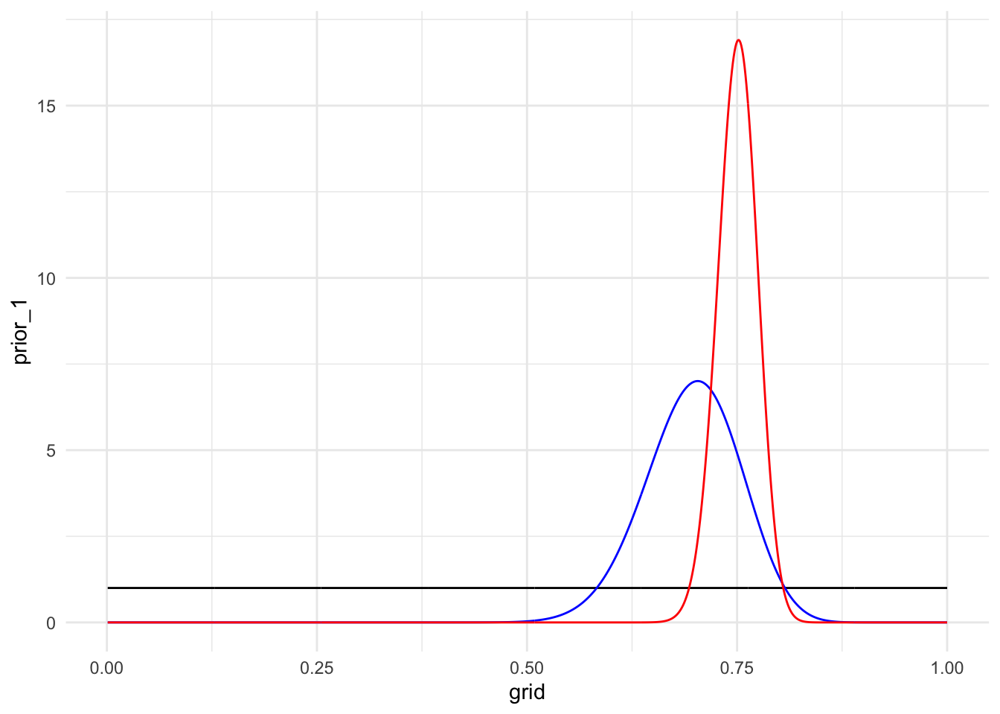
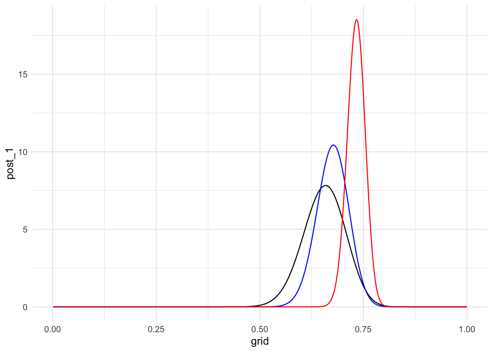

library(tidyverse)Goal of Mini-Project:
Explore a Bayesian approach to data analysis. Understand how different priors affect posterior distributions.
Statement of Integrity:
“I have followed all rules for collaboration for this project, and I have not used generative AI on this project.” - Kaitlin Heintzman
Introduction
The goal of this project is to try to answer the question “what is the probability that Rafael Nadal wins a point on his own serve when playing against Novak Djokovic at the French Open?” by using Bayesian analysis to estimate this unknown parameter and its distribution. In this project, I will use various priors combined with data from the 2020 French Open to construct three posterior distributions, I will analyze the differences that I find along the way and how each distributions predicts the probability of interest.
Priors
prior_1 ~ beta(1,1)
prior_2
alphas <- seq(0.001, 100, length.out = 1000)
betas <- ((1-(46/66))/(46/66)) * alphas
param_df <- tibble(alphas, betas)
param_df <- param_df |> mutate(vars =
(alphas*betas)/((alphas+betas)^2*(alphas+betas+1)))
target_var <- 0.05657^2
param_df <- param_df |> mutate(dist_to_target = abs(vars - target_var))
param_df |> filter(dist_to_target == min(dist_to_target))# A tibble: 1 × 4
alphas betas vars dist_to_target
<dbl> <dbl> <dbl> <dbl>
1 45.3 19.7 0.00320 0.00000310For this informative prior I made the assumption that the clay-court match played in the previous year was preformed in comparable conditions to the match that I am interested in. Examples of conditions that I assume to be the same are weather (it is not considerably more sunny) and player ability (both players are not coming off of an injury or illness).
prior_3
alpha <- seq(0.001, 300, length.out = 1000)
beta<- (0.25/0.75)*alpha
tibble(alpha,beta)|>
mutate(prob = pbeta(0.7,alpha, beta),
dist = abs(prob - 0.02))|>
filter(dist == min(dist))# A tibble: 1 × 4
alpha beta prob dist
<dbl> <dbl> <dbl> <dbl>
1 252. 83.9 0.0200 0.0000289For this informative prior I make the assumption that the sports announcer is not bias towards one of the players, and that the announcer is also accurate at estimating performance percentages.
In my code above, I also implement my own understand of “almost sure” by denoting the distance column with a value of 0.02, whereas another person could potentially believe that this value should be larger or smaller.
Graph of priors
grid <- seq(0.001, 1, length.out = 1000)
prior_1 <- dbeta(grid, 1, 1)
prior_2 <- dbeta(grid, 45.3, 19.7)
prior_3 <- dbeta(grid, 252, 83.9)
plot_1 <- tibble(grid, prior_1)
plot_2 <- tibble(grid, prior_2)
plot_3 <- tibble(grid, prior_3)
ggplot(data = plot_1, aes(x = grid, y = prior_1)) +
geom_line() +
geom_line(data = plot_2, aes( x = grid, y = prior_2), col = "blue")+
geom_line(data = plot_3, aes(x = grid, y = prior_3), col = "red")+
theme_minimal()
Posteriors
data = 56/85
From class -
posterior ~ \(beta( y_{obs}+ \alpha, n-y_{obs}+\beta)\)
prior 1 to posterior 1
post_1 ~ beta(56 + 1, 85 - 56 + 1) post_1 ~ beta(57, 30)
prior 2 to posterior 2
post_2 ~ beta(56 + 45.3, 85 - 56 + 19.7 ) post_2 ~ beta(101.3, 48.7)
prior 3 to posterior 3
post_3 ~ beta(56 + 253, 85 - 56 + 83.9 ) post_3 ~ beta(309, 112.9)
Graph of posteriors
grid <- seq(0.001, 1, length.out = 1000)
post_1 <- dbeta(grid, 57, 30)
post_2 <- dbeta(grid, 101.3, 48.7)
post_3 <- dbeta(grid, 309, 112.9)
plot_1 <- tibble(grid, post_1)
plot_2 <- tibble(grid, post_2)
plot_3 <- tibble(grid, post_3)
ggplot(data = plot_1, aes(x = grid, y = post_1)) +
geom_line() +
geom_line(data = plot_2, aes( x = grid, y = post_2), col = "blue")+
geom_line(data = plot_3, aes(x = grid, y = post_3), col = "red")+
theme_minimal()
Posterior means and 90% credible intervals
Posterior_1
57/(57+30)[1] 0.6551724qbeta(c(0.05, 0.95), 57, 30)[1] 0.5697738 0.7364913posterior mean = 0.655
credible interval = (0.5698 - 0.7365)
Posterior_2
101.3/(101.3+48.7)[1] 0.6753333qbeta(c(0.05, 0.95), 101.3, 48.7)[1] 0.6113201 0.7366795posterior mean = 0.675
credible interval = (0.6113 - 0.7367)
Posterior_3
309/(309 + 112.9)[1] 0.732401qbeta(c(0.05, 0.95), 309, 112.9)[1] 0.696369 0.767179posterior mean = 0.732
credible interval = (0.6964 - 0.7672)
Why do the posteriors look different?
The posteriors look different from each other because although they use the same data, they all came from different priors which means that their posterior distributions are directly connected to differing prior alphas and betas. This causes the staggering of means, and the difference in variance we can see in the wideness/narrowness of the distributions in the posterior plot.
Which would I choose?
I would choose the 2nd posterior distribution which used the informative prior based on the previous years match results. I would choose this posterior distribution because I believe that utilizing the previous years data would be a good base of information for our question of interest, and it has a mean which is around the middle of the other two distributions. I also believe that since we know how notable Nadal is, it is not entirely fair to use an uninformative prior. Lastly, the low variance that can be seen in the last distribution makes me not believe this would be a beneficial posterior distribution because it does not hold a lot of room for error, and it relies heavily on the information that was provided in the prior.
Why does one posterior have a lower variance?
The last posterior distribution which was created using the sports announcers previous knowledge has the lowest variance, which can be seen by the extremely narrow peak in the plot. The reason that this has such a low variance is because if both alpha and beta parameters in a gamma distribution are large the variance will be small and in this posterior distribution the posterior alpha and beta are extremely large values (due to the large parameters from the prior distribution). ## Conclusion
In this mini project, I found that the prior distribution will greatly influence your posterior distribution and therefore the conclusions that you can make about your parameter/question of interest. I can see that for binomial data, starting with large parameters in your prior will to a posterior model with low variance and a much more narrow credible interval, which seems unlikely to be helpful in situations where you may not know feel as confident in a topic (or in the information you have been given to create the prior). I also can conclude why using a non-informative prior would be beneficial in a case where you don’t have a lot of prior experience/information because it returns a posterior model with more variance, and therefore returns a wider credible interval. This would be helpful as a model to get an impression about what a proportion might be, and to then be able to potentially incorporate more data into this, which would lead to a stronger model. Above I explained that I believe the “middle” distribution (2nd prior) would be my distribution of choice and from this project I can see how using an informative prior, when the data is concrete and not speculated, potentially will lead to a good model which is not too biased towards the prior, and will return a solid credible interval and estimate for the proportion of interest.
Lastly, I can make a conclusion about our question of interest using the model that I would use! To do so I will interpret the credible interval. According to the model, there is a 90% probability that the proportion of points Rafael Nadal will win when he is serving against Noval Djokovic at the French Open is between 0.611 and 0.737.